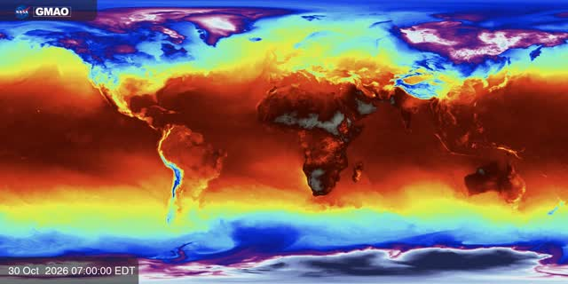
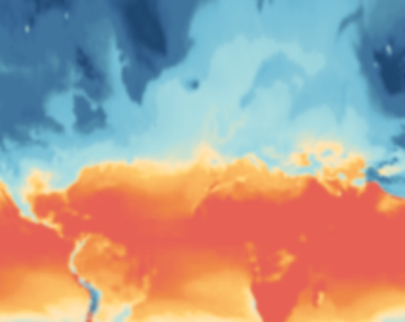

NASA Space Apps Challenge 2026: The Earth Information Jukebox
Earth Information Jukebox
A web page where you can follow three gulls on their autumn migration by watching, by listening, or both. The harmony comes from NASA Earth Information Center temperature imagery, and the melody and rhythm come from the birds' GPS tracks.
By team Rongawi Iwak Tempe Solutions
Birds
3 lesser black-backed gulls
Tracked
Oct 2024 to Apr 2025
GPS fixes
40,814
NASA frames
60
1 The story
Eric, Nico and Sanne are three lesser black-backed gulls from the colony at Zeebrugge, on the Belgian coast. All three left in autumn 2024 and came back in spring 2025, and each spent the winter somewhere different.
Eric
Eric left on 22 October 2024. He rested near Orléans, south of Paris, for about two weeks, then crossed the Bay of Biscay in a single day on 7 November, flying 824 km. He spent the winter moving around inland Spain and was home on 19 March 2025.
Nico
Nico left on 27 October. On 30 October he flew 793 km across the open Bay of Biscay with the wind behind him. He then spent 139 days at Dakhla, on the Saharan coast, and returned last, on 12 April.
Sanne
Sanne was the last to leave, on 11 November. She also wintered at Dakhla and was back on 27 March, after 20,532 km.
Daily average positions from departure to return. Red: Eric. Teal: Nico. Gold: Sanne.
The three journeys, departure to return
Bird
Left
Back
Winter
Distance
Biggest day
Eric
22 Oct 2024
19 Mar 2025
Inland Spain
20,532 km
824 km, 7 Nov
Nico
27 Oct 2024
12 Apr 2025
Dakhla
15,646 km
793 km, 30 Oct
Sanne
11 Nov 2024
27 Mar 2025
Dakhla
20,532 km
580 km, 12 Nov
2 The challenge
Build an "Earth Jukebox" that "pairs EIC visual frames with dynamic sonifications generated in real time."
NASA's Earth Information Center (EIC) explains how the planet is changing mostly through images and animations. That leaves out people who are blind or have low vision, and some changes are easier to notice by ear than by eye.
A kettle is a good everyday example. Nobody checks a thermometer to know the water is boiling; the hiss gets louder and then the whistle starts. We tried the same with Earth data, and picked bird migration because it is easy to picture and to follow over time.
3 The data
NASA Earth Information Center imagery
The temperature layer is the EIC visualization GEOS-FP Near-Surface Temperature (SVS 5147), from NASA's GEOS-FP weather model. We use 60 frames, one every six hours, from 30 October to 14 November 2026.
The EIC only keeps the latest two weeks of this animation, so there are no frames from 2024 or 2025. We play the 60 frames across each journey instead, the first at departure and the last at return, like a musical score. The map and the music always use the same frame at the same moment.
Gull GPS tracks
The tracks come from the open LBBG_ADULT dataset of the Research Institute for Nature and Forest (INBO) in Belgium, released under CC0. We picked three birds that left and returned at similar times and gave them names.
We processed them with the same R scripts as our earlier migration essay. We kept one position every 30 minutes and removed one impossible jump. A stopover is at least two days within 20 km, and a tracking gap is a full day with no position.
ERA5 wind
For one example we added hourly ERA5 wind at 100 m, from the Open-Meteo archive, for 30 October 2024. That is the day Nico crossed the Bay of Biscay, and he had an easterly tailwind of about 7.5 m/s for most of it. The wind only appears in that one example.


Top: the original NASA EIC frame. Bottom: the same frame cropped to the flyway, reprojected and recoloured for the map.
4 From picture to sound
Step 1: Read the colour under the bird
At each moment of a journey we take the EIC frame for that moment and read the colour at the bird's position. We look up that colour on NASA's own colour scale, which gives a number between 0 (the coldest colour) and 1 (the warmest). It is a relative value, not a temperature in degrees.
Step 2: Turn the data into music
Each journey is split into 26 one-second steps and written as a MIDI file, followed by a 4-second ending back at the colony:
The image warmth under the bird sets the chord. A warmer colour plays a higher chord, on a D minor pentatonic scale so that any combination sounds reasonable.
Latitude sets the melody: higher in the north, lower in the south. On the way back the same melody plays upside down.
The distance flown that day sets the beat, up to four pulses per beat on the busiest days. On a rest day the beat stops and the melody holds one long note.
Distance from the colony sets a low drone on the home note: loud near home, quiet far away. The ending plays the home chord.
In the wind example, the wind sets the tempo and the interval. Stronger wind is faster, a tailwind gives open intervals and a headwind gives tense ones.
Step 3: Play it with instrument sounds
FluidSynth plays the MIDI through a General MIDI soundfont: flute for the melody, marimba for the beat, a warm pad for the harmony and a low cello drone for the ending at home. Each instrument is saved as its own track, which is why each map layer can switch its sound on and off.
Step 4: Keep the map and the sound in sync
Each recording lasts 30 seconds: 26 seconds of journey and 4 seconds at home. The browser starts every track on the same clock as the map, so the chord you hear comes from the colour under the bird you are looking at.
EIC frame coloura warmth value from 0 to 1
Warmthpad chords, MIDI 48 to 64
Latitudeflute melody, MIDI 60 to 84
Daily distancemarimba, 0 to 4 pulses per beat
Windtempo 60 to 140 BPM and the pad interval
MIDI4 tracks played by FluidSynth
Tracksone clock shared with the map
How one moment of a journey becomes sound.
5 Listen
Each recording is 30 seconds long. The first 26 seconds cover the whole journey, from departure to return, and the last 4 seconds are the bird back home. Headphones help.
Eric
What you hear: the beat runs almost the whole way through, because Eric kept moving around Spain all winter. Eric's chords sit lower than the others', because inland Spain reads cooler on the NASA image. In the last four seconds the beat stops and a low drone marks the return home.
Nico
What you hear: a burst of beats at the start, including the crossing of the Bay of Biscay, then long held notes for most of the piece during the stay at Dakhla, and the beat again on the way home. A low drone ends the journey back at the colony.
Sanne
What you hear: a steady beat for most of the way south, a stretch of held notes at Dakhla, and a busy beat on the flight home before the drone at the end.
Nico and the wind, 30 October 2024
What you hear: 21 hours over the Bay of Biscay in 8 seconds. The tempo slows as the tailwind drops from about 10 to 5 m/s. The pad plays open intervals because the wind is behind Nico the whole time.
The EIC frames use a 16-colour scale from pale lilac (coldest) through blue, green, yellow and orange to dark red (warmest). We don't show it on the map. We only use it to read each pixel as a value from 0 to 1.
Our map: MetBrewer Hiroshige, reversed
On the map we redraw the same values with the Hiroshige palette from MetBrewer, reversed, so blue is cooler and orange and red are warmer. Most people with colour-vision deficiencies can still tell blue from orange.
The switch from blue to orange happens at the point where NASA's own scale turns orange, so Europe shows as cool and the Sahara and Middle East as warm. The layer is drawn at 50% opacity so the routes and coastlines stay readable.
Birds and sounds
Each bird has one colour throughout, always shown next to its name. The three sound layers each have a colour and an icon.
Typeface
All text is set in Satoshi. The font files are stored with the page, so it also works offline on a projector.
NASA EIC ramp (16 colours)
Map: Hiroshige, reversed (10 colours)
#1e466e
#376795
#528fad
#72bcd5
#aadce0
#ffe6b7
#ffd06f
#f7aa58
#ef8a47
#e76254
CoolerWarmer
Birds and sound layers
Eric #a8201a
Nico #0a9396
Sanne #ec9a29
Temperature chords #ff8a3d
Wind #7cc4ff
Movement beat #ffffff
Satoshi
Black 900
Bold 700
Medium 500
Regular 400
Every colour used for data, with its hex code.
7 Accessibility
The challenge asks for Earth data that people can experience without seeing it. This is what we did for that, on this page and in the pitch.
Each migration can be followed by listening alone, and every recording has a written description of what it sounds like.
For screen readers the page uses proper headings, landmarks and a section menu. The route map has a text description and a table with the same facts.
Everything works with a keyboard, with a skip link and visible focus. In the pitch, the arrow keys change chapters, Space plays, 1 to 3 pick a bird and F switches to full screen.
Text is large, with high contrast in both the light and dark themes.
The map palette works for most kinds of colour blindness, and nothing is shown by colour alone.
If your device is set to reduce motion, the animations and the moving wind particles are turned off.
8 Team
Rongawi Iwak Tempe Solutions
Edo Danilyan
Muhammad Noor Fakhruzzaman
Fauziyah
Arief Purnama Muharram
Muhammad Ikhsan
9 Use of AI tools
The idea, the story and the design direction come from our team: following three gulls, pairing their journeys with NASA EIC imagery, the kettle example, and choosing which data drives each sound.
We used AI assistants, including Claude by Anthropic, as development tools. They helped us:
Make the project reproducible, by turning our one-off processing steps into scripts that rebuild the data, map layers and audio from the original sources, with step-by-step instructions.
Write proper documentation: the README, this page and the pitch notes.
Write and refactor code for the web page, the Python build scripts, the MIDI composer and the tests. The team reviewed and ran all of it.
No images, audio or data were generated by AI. The music is made by our own mapping script and FluidSynth from NASA EIC imagery and GPS tracks, and the gull artwork was made by a team member.
Tech stack: Python (NumPy, pandas, Pillow, mido), R (dplyr, sf) for the track processing, FluidSynth and FFmpeg for the audio, and Quarto, D3 and the Web Audio API for the web pages.
Colour: MetBrewer Hiroshige palette. Typeface: Satoshi by Indian Type Foundry. Maps: D3 and Natural Earth boundaries.